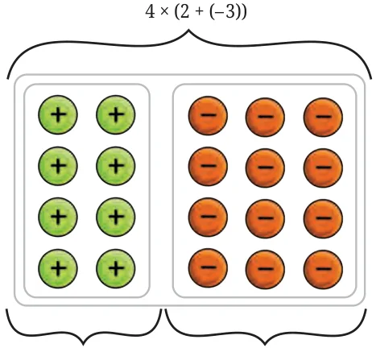
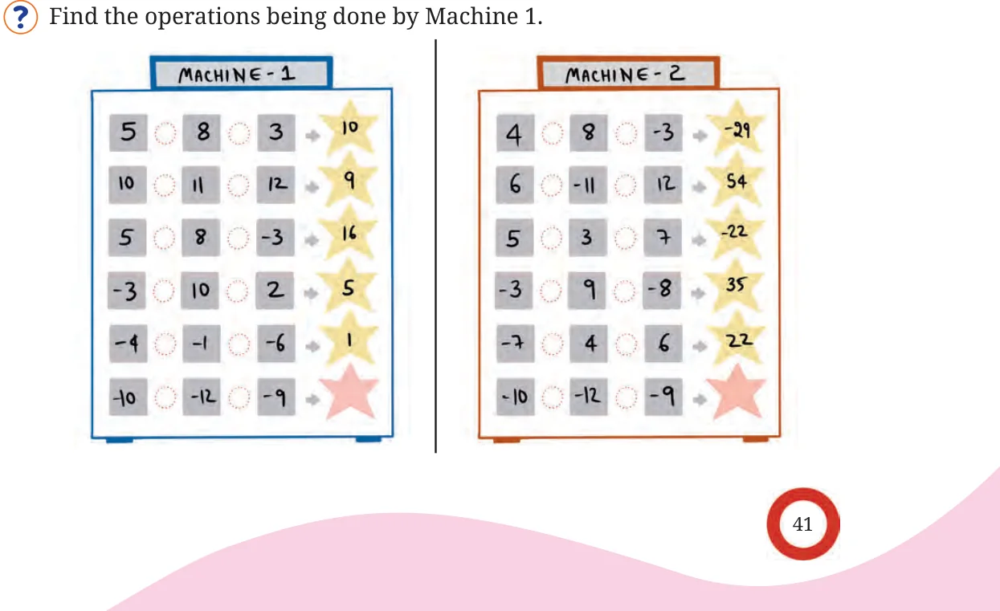

What is the value of the expression \(5 \times - 3 \times 4\)? Does it matter whether we multiply \(5 \times - 3\) and then multiply the product with 4, or if we multiply \(- 3 \times 4\) first and then multiply the product with 5?
\((5 \times - 3) \times 4 5 \times\) ( \(- 3 \times 4) = - 15 \times 4 = 5 \times - 12 = - 60\). \(= - 60\).
Take a few more examples of multiplication of 3 integers and check this property. What do you observe? We can see that the product is the same when we ‘group’ the multiplications in these two ways. So, integer multiplication is associative, just like integer addition. In general, for any three integers a, b, and c,
\(a \times\) (b \(\times\) c) = (a \(\times\) b) \(\times c\).
In the expression \(5 \times - 3 \times 4\), try to multiply 5 and 4 first and then multiply the product with \(- 3\): \((5 \times 4) \times - 3\).
\(5 \times 4 = 20\), and \(20 \times - 3 = - 60\).
This also gives the same product. Are there orders in which \(5 \times - 3 \times 4\) can be evaluated? Will the product be the same in all these cases?
Multiply the expression \(25 \times - 6 \times 12\) in all the different orders and check if the product is the same in all cases. The product remains the same when 3 or more numbers are multiplied in any order. Look at the following series of multiplications:
\(- 1 \times - 1 = 1 - 1 \times - 1 \times - 1 = - 1 - 1 \times - 1 \times - 1 \times - 1 = 1 - 1 \times - 1 \times - 1 \times - 1 \times - 1 = 1\)
When \(- 1\) is multiplied 2 or 4 times the product is positive. When it is multiplied 3 or 5 times the product is negative. Can you generalise these statements further?
Using this understanding of multiplication of many integers, can you give a simple rule to find the sign of the product of many integers? Now, consider the expression \(5 \times (4 +\) ( \(- 2))\). As in the case of positive integers, is this expression equal to \(5 \times 4 + 5 \times\) ( \(- 2)\)? We see that it does. Recall that we call this property the distributive property. Check if the distributive property holds for ( \(- 2) \times (4 +\) ( \(- 3))\) (that is, if this expression equals ( \(- 2) \times 4 +\) ( \(- 2) \times\) ( \(- 3))\), and for a few other such expressions of your choice. What do you observe? We see that the distributive property seems to
In the case of positive integers, we used a rectangular arrangement of objects to visually understand why the distributive property holds. We can use the same setup even in the case of integers by using green tokens for positive numbers and red tokens for negative numbers. For example, consider the following rectangular arrangement of tokens - We see that the overall arrangement represents \(4 \times (2 +\) ( \(- 3))\), and it is clear that this also equals the sum of \(4 \times 2 4 \times 2 4 \times\) ( \(- 3)\)

and \(4 \times\) ( \(- 3)\).
Can you visually show the distributive property for an expression like \(- 4 \times (2 +\) ( \(- 3))\)? [Hint: Use the fact that multiplying a number by \(- 4\) is adding the inverse of the number 4 times.] Thus, for any integers a, b, and c, we have
\(a \times\) (b + c) = (a \(\times\) b) + (a \(\times\) c).
Pick the Pattern
Two pattern machines are given below. Each machine takes 3 numbers, does some operations and gives out the result.

The operation done by Machine 1 is
(first number) + (second number) - (third number).
Written as an expression, this will be \(a + b - c\), where a is the first number, b is the second number, and c is the third number. For example, \(5 + 8 - 3 = 10\), and ( \(- 4) +\) ( \(- 1) -\) ( \(- 6) = 1\). So, the result of the last group will be, ( \(- 10) +\) ( \(- 12) -\) ( \(- 9) =\) _______.
Find the operations being done by Machine 2 and fill in the blank. Make your own machine and challenge your peers in finding its operations.